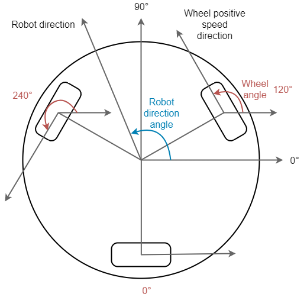

Coordinate system

Units
-
wheelLinearVelocity - m/s
-
robotSpeed - m/s
-
robotSpeedX - m/s
-
robotSpeedY - m/s
-
robotDirectionAngle - rad
-
wheelAngle - rad
-
wheelDistanceFromCenter - m
-
robotAngularVelocity - rad/s
Wheel speed calculation
In meters per second
wheelLinearVelocity = robotSpeed * cos(robotDirectionAngle - wheelAngle) + wheelDistanceFromCenter * robotAngularVelocity
In mainboard units
Mainboard units can be used directly without any conversion to meters per second.
wheelVelocityInMainboardUnits = robotSpeedInMainboardUnits * cos(robotDirectionAngle - wheelAngle) + robotAngularVelocityInMainboardUnits
Using forward and sideways robot speeds
robotSpeed and robotDirectionAngle can be calculated using sideways
(x-axis direction) and forward (y-axis direction) speeds:
robotSpeed = sqrt(robotSpeedX * robotSpeedX + robotSpeedY * robotSpeedY) robotDirectionAngle = atan2(robotSpeedY, robotSpeedX)
Wheel linear velocity in mainboard units
wheelAngularSpeedInMainboardUnits = (wheelAngularVelocity / (2 * PI())) * encoderCountsPerWheelRevolution * pidControlPeriod
where
wheelAngularVelocity = wheelLinearVelocity / wheelRadius encoderCountsPerWheelRevolution = gearboxReductionRatio * encoderEdgesPerMotorRevolution pidControlPeriod = 1 / pidControlFrequency
Simplified
wheelAngularSpeedInMainboardUnits = wheelLinearVelocity * gearboxReductionRatio * encoderEdgesPerMotorRevolution / (2 * PI * wheelRadius * pidControlFrequency)
OR
wheelAngularSpeedInMainboardUnits = wheelLinearVelocity * wheelSpeedToMainboardUnits
Where wheelSpeedToMainboardUnits is constant and can be calculated once in advance:
wheelSpeedToMainboardUnits = gearboxReductionRatio * encoderEdgesPerMotorRevolution / (2 * PI * wheelRadius * pidControlFrequency)
Example
-
Pololu 37D 19:1 motor
-
100 Hz PID calculation frequency
-
70mm diameter wheels
-
gearboxReductionRatio = 18.75
-
encoderEdgesPerMotorRevolution = 64
-
wheelRadius = 0.035 [m]
-
pidControlFrequency = 100 [Hz]
-
wheelLinearVelocity = 2 [m/s]
wheelSpeedToMainboardUnits = 18.75 * 64 / (2 * PI * 0.035 * 100) ≈ 54.5674 wheelAngularSpeedInMainboardUnits = 2 * 54.5674 ≈ 109.1348